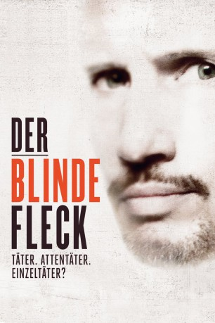
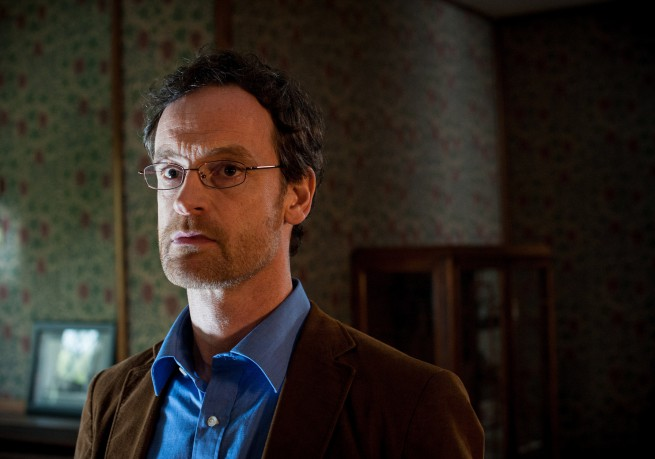

#3104 Der Blinde Fleck
 
 IMDB-Wertung: 6.2 / 10
IMDB-Wertung: 6.2 / 10  Metascore: 0
Metascore: 0 
Am 26. September 1980 wurde der bisher dahin schwerste Anschlag in der Geschichte der Bundesrepublik Deutschland verübt: Eine Bombenexplosion erschütterte das Oktoberfest in München. 13 Menschen starben. 211 wurden verletzt. Die Behörden machten den radikalen Einzeltäter Gundolf Köhler verantwortlich. BR-Reporter Ulrich Chaussy erhält Jahre später den Auftrag, über das Oktoberfest-Attentat berichten. Eigentlich will er nur einen kurzen Beitrag zusammenstellen, aber seine Recherchen und die Gespräche mit Zeugen fördern immer mehr Ungereimtheiten zu Tage. Beweisstücke verschwinden aus der Asservatenkammer. Er beginnt an der offiziellen Darstellung der Ereignisse zu zweifeln und verstrickt sich immer weiter in die Suche nach der Wahrheit. Mit der Hilfe des Anwalts der Betroffenen, Werner Dietrich, lässt Chaussy nicht locker und macht so den Kampf für Gerechtigkeit zu einer Aufgabe, die sein ganzes Leben prägen soll.
Jahr: 2013
Dauer: 99 Minuten
FSK: 12
Land: Deutschland Studio: Ascot FilmverleihTonspuren:
Untertitel:
Auflösung: 1080p (1920x808) Größe: 5386 MB
Genre: Thriller, Drama, Geschichte
Regisseur: Daniel Harrich
Drehbuch: Ulrich Chaussy, Daniel Harrich
Soundtrack: Ian Honeyman
Darsteller:
 Benno Fürmann als Ulrich Chaussy
Benno Fürmann als Ulrich Chaussy- Nicolette Krebitz als Lise Chaussy
 Heiner Lauterbach als Dr. Hans Langemann
Heiner Lauterbach als Dr. Hans Langemann Isolde Barth als Josefine Angerer
Isolde Barth als Josefine Angerer- Wowo Habdank als Dieter Wenzel
- Til Schindler als Max Gärtner
-  Jörg Hartmann als Werner Dietrich
 August Zirner als Meier
August Zirner als Meier- Udo Wachtveitl als Werner Winter
- Miroslav Nemec als Kurt Rebmann
- Anna Grisebach als Gisela Lehmann
- Walter Hess als Gerhard Tanner
- Michael Jäger als Chef
- Simone Kabst als Birgit Wenzel
- Tessa Mittelstaedt als Margot Köhler
- Olaf Krätke als Kommissar Metzler
- Ferdinand Schmidt-Modrow als Anton Franke
- Peter Rappenglück als Ministerpräsident
- Fabian Halbig als Gundolf Köhler
- Christopher Lagerholm als Peter Wiegand
- Philipp Rankl-Bartel als Polizist
- Moritz Fischer als Terrorist
Datei: X:\2013(A-F)\Blinde Fleck, Der (2013, FSK12, 1920x808).mkv seit 28.01.2016
Festplatte: HD 2012(N-Z)-2013(A-H)
 Es gibt insgesamt 127 Filme in der Gruppe '2013(A-F)'
Es gibt insgesamt 127 Filme in der Gruppe '2013(A-F)'